library(dplyr)
library(arrow)
library(fpp3)
library(knitr)
library(ggdist)Let’s say we are analyzing the data in the BART time series that I’ve been using a various blog posts.
parquet_directory <- "../dask-data-io/data/parquet_data"
df <- open_dataset(parquet_directory)
df_daily <- df %>%
group_by(Date) %>%
summarise(daily_riders=sum(Riders)) %>%
mutate(date=as.Date(Date)) %>%
select(c(date, daily_riders)) %>%
collect()
df_daily %>% head()| date | daily_riders |
|---|---|
| 2011-01-01 | 124971 |
| 2011-01-02 | 94276 |
| 2011-01-03 | 286747 |
| 2011-01-04 | 323233 |
| 2011-01-05 | 327972 |
| 2011-01-06 | 330048 |
I’ll create a tstibble of monthly BART riders, 2011 through the end of 2018 and run through some exercises where I try to forecast how many monthly riders there will be in 2019.
Here’s the groundtruth dataset for \([2011, 2019]\):
df_daily_ts <- df_daily %>%
as_tsibble(index=date) %>%
filter_index("2011-01-01" ~ "2018-12-31")
df_monthly_ts <- df_daily_ts %>%
group_by_key() %>%
index_by(year_month = ~ yearmonth(.)) %>%
summarise(
monthly_riders = sum(daily_riders, na.rm = TRUE),
)
df_monthly_ts %>% head()| year_month | monthly_riders |
|---|---|
| 2011 Jan | 8203562 |
| 2011 Feb | 7933264 |
| 2011 Mar | 9049039 |
| 2011 Apr | 8824840 |
| 2011 May | 8940380 |
| 2011 Jun | 9210691 |
Code
# Create the date dynamically
earliest_date <- min(df_monthly_ts$year_month)
latest_date <- max(df_monthly_ts$year_month)
formatted_string <- sprintf("%s through %s",
format(earliest_date, "%b %Y"),
format(latest_date, "%b %Y"))
color <- ""
plot_bart_series <- function(title, subtitle) {
df_monthly_ts %>%
ggplot(aes(x = year_month, y = monthly_riders)) +
geom_line(linewidth = .9,
alpha = 1,
color = "#619CFF") +
scale_y_continuous(labels = scales::comma_format()) +
theme_minimal() +
labs(
title = title,
subtitle = if (missing(subtitle)) {
""
} else {
subtitle
},
y = "Riders",
x = "Month"
)
}
plot_bart_series("Monthly Bart Rides", formatted_string)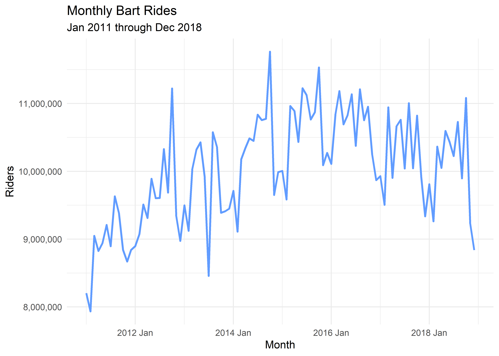
When analyzing a time series, we often want to produce a forecast, \(\hat{y}_{T+h|T}\). I found this to be a weird looking term when I first saw it in (Hyndman and Athanasopoulos 2021), so I’ll break down what it’s referring to here:
- \(\hat{y}\): The “hat” symbol (^) over the (\(y\)) indicates that this is an estimated value.
- \(T\): This represents the most recent observation from the time series.
- \(h\): This is the “forecast horizon”, indicating how many time steps ahead from (T) we are forecasting.
- \(|T\): The vertical bar (\(|\)) followed by (\(T\)) signifies that the forecast is conditional on the information available up to time (T).
Thus,\(\hat{y}_{T+h|T}\) is a forecast of the time series, \(y\) at time \(T+h\), given the information available up to and including time \(T\).
Benchmark Forecasts
Predicting the mean
One of the most straightforward prediction models in the mean, a single scalar that minimizes mean-squared error across the data.
\[ \hat{y}_{T+h|T} = \frac{1}{T} \sum_{i=1}^T y_{i} \] We can calculate that on our BART data:
pred <- mean(df_monthly_ts$monthly_riders)
pred[1] 10023511So if we are forecasting with the mean, we’ll simply predict always predict $=$10,023,511 as the monthly rider total for all months going forward.
fc_mean <- df_monthly_ts %>%
model(Mean = MEAN(monthly_riders))
plot_bart_series("Mean Forecast") +
geom_line(
data = fc_mean %>% forecast(h = 12),
linewidth = 1,
linetype="dotted",
aes(x = year_month, y = .mean, color = "Forecast")
) +
geom_line(
data = fc_mean %>% augment(),
linewidth = 1,
alpha=.5,
aes(x = year_month, y = .fitted, color = "Fitted")
) +
labs(color = "")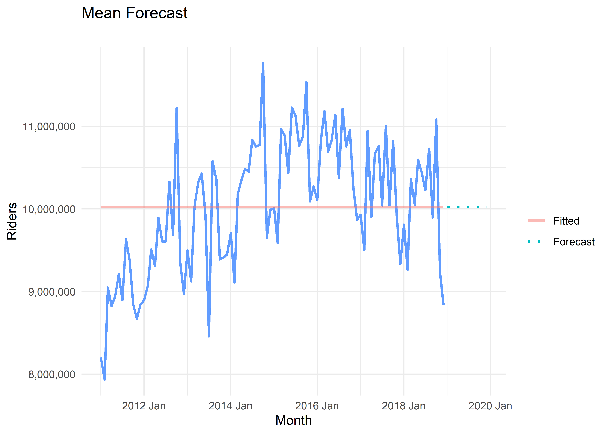
Model Evaluation
If we want to evaluate that prediction, we would look at its residuals, \(\hat{y}-y\), across the observed data. Here we’ll take a look at the distribution of these residuals, which will be important for both model evaluation and model inference.
residuals <- df_monthly_ts$monthly_riders - pred
residuals %>% summary() Min. 1st Qu. Median Mean 3rd Qu. Max.
-2090248 -617574 19581 0 711366 1742004 The most important checks on these are that their mean is 0 and that the residuals are not auto-correlated – if those two conditions don’t hold, that means that the model can be improved. In addition to those essential properties, it is also preferable that the residuals exhibit constant variance (homoscedasticity) and are normally distributed, but a model that fails on those last two conditions cannot necessarily be improved (Hyndman and Athanasopoulos 2021, chap 5.4).
We can use gg_tsresiduals() from the feast package to get some simple visuals that let us evaluate these diagnostics:
df_monthly_ts |>
model(MEAN(monthly_riders)) |>
gg_tsresiduals()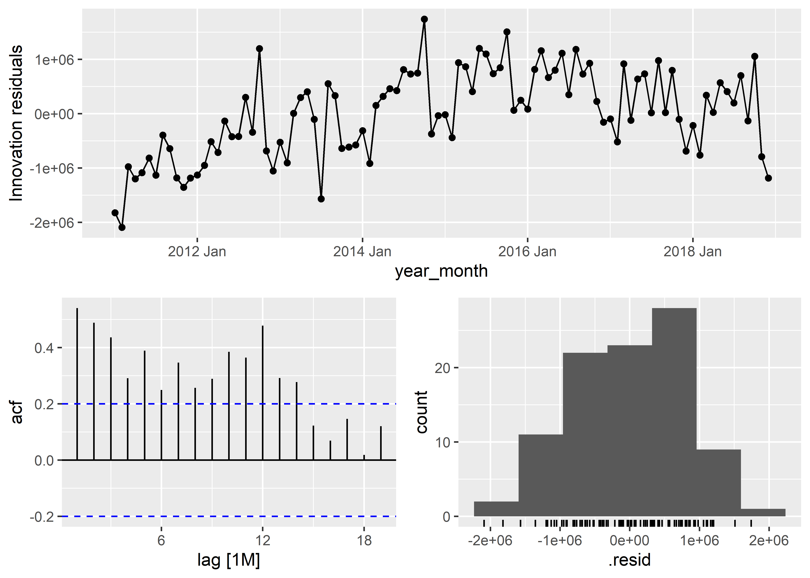
From these visuals, I’ll informally conclude that:
- The mean is 0
- There is significant autocorrelation
- The residuals look kind of normally distributed
- The variance of the residuals is not constant – we start out systematically overestimating ridership
Given that we failed on autocorrelation, we conclude that this model can be improved, and this is unsurprising given that we were just predicting the mean. However, we’ll keep working with this model as we establish how to do inference on this forecast and produce prediction intervals, rather than just a point estimate forecast.
Model Inference
If we assume that the distribution of future observations is normal, a 95% prediction interval would be computed as follows:
\[
\hat{y}_{T+h|T} \pm 1.96 \hat\sigma_h
\] This follows from the fact that 95% of the area under a Gaussian curve lies within ~1.96 standard deviations, or, \(1.96 \hat\sigma_h\), of the mean (see proof). 1.96 can be switched out with a different multiplier depending on the desired interval (see table). When we are forecasting, the standard deviation of the forecast distribution is estimated using the corrected sample standard deviation of the residuals. \[
\begin{equation}
\hat{\sigma} = \sqrt{\frac{1}{T-K-M}\sum_{t=1}^T e_t^2}
\end{equation}
\]
T <- df_monthly_ts %>% dim() %>% .[1]
K <- 1
M <- 0
sample_sd <- sqrt( (1 / (T - K - M)) * sum(residuals^2) )
interval_95 <- 1.96 * sample_sd
interval_95[1] 1575196So for our mean forecast, the prediction interval would be 10,023,511 \(\pm\) 1,575,196
fc_mean <- df_monthly_ts %>%
model(MEAN(monthly_riders)) %>%
forecast(h=12)
plot_bart_series("Mean Forecast") + autolayer(fc_mean)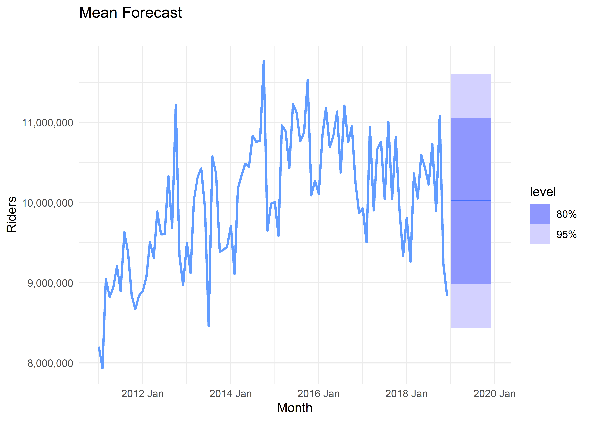
We can also relax some of the assumptions necessary for theoretical inference by using bootstrapping, where we only have to assume that the residuals are uncorrelated and have constant variance. To be fair, both of these conditions are violated in this example model, but we’ll still bootstrap this as an example.
When we bootstrap a time series forecast, we use the following equation:
$$ \[\begin{align*} y^*_{T+1} &= y_{T} + e^*_{T+1} \\ y^*_{T+2} &= y_{T+1}^* + e^*_{T+2} \\ \vdots \\ y^*_{T+h} &= y_{T+h-1}^* + e^*_{T+h} \\ \end{align*}\] $$
Where each \(e^*_{T+h}\) is a random sample with replacement from the residuals distribution.
bootstrapped_fs <- df_monthly_ts %>%
model(MEAN(monthly_riders)) %>%
generate(h = 12, times = 1, bootstrap = TRUE)
plot_bart_series("") +
geom_line(data = bootstrapped_fs, alpha=.5, linewidth=1, aes(y = .sim, colour = as.factor(.rep) )) +
guides(colour = "none")
fc_mean <- df_monthly_ts %>%
model(MEAN(monthly_riders)) %>%
forecast(h=12, bootstrap = TRUE, times = 5000)
plot_bart_series("") + autolayer(fc_mean) +
theme(axis.line.y = element_blank(),
axis.text.y = element_blank(),
axis.title.y = element_blank())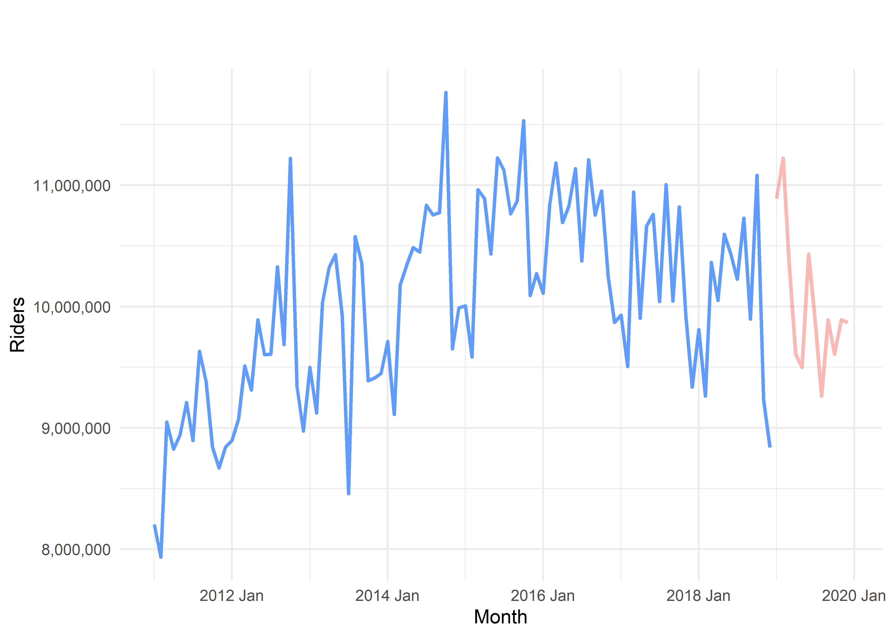
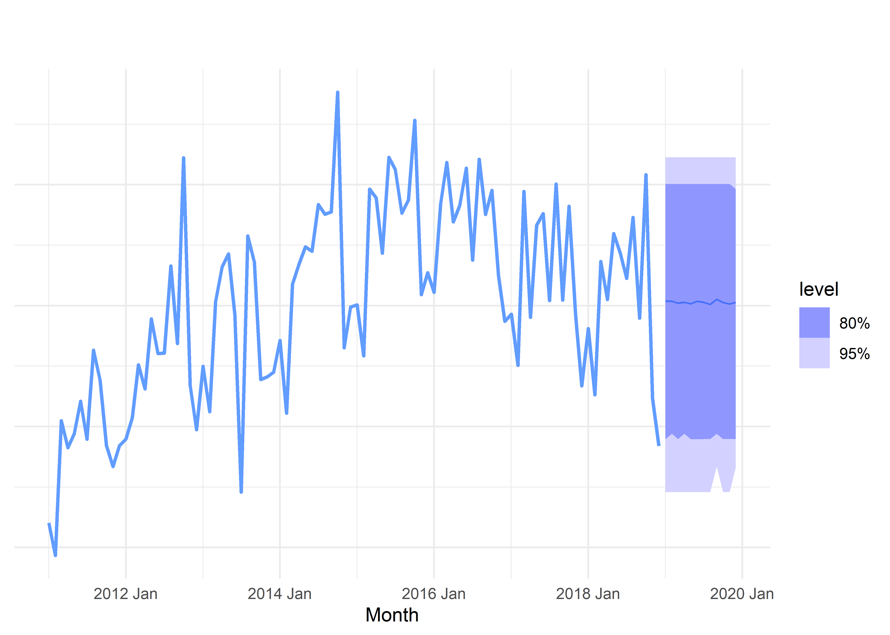
Random Walk
\[ \hat{y}_{T+h|T} = y_T \]
fc_mean <- df_monthly_ts %>%
model(Naive = NAIVE(monthly_riders))
plot_bart_series("Mean Forecast") +
geom_line(
data = fc_mean %>% forecast(h = 12),
linewidth = 1,
linetype="solid",
aes(x = year_month, y = .mean, color = "Forecast")
) +
geom_line(
data = fc_mean %>% augment(),
linewidth = 1,
linetype = "solid",
alpha=.5,
aes(x = year_month, y = .fitted, color = "Fitted")
) +
labs(color = "")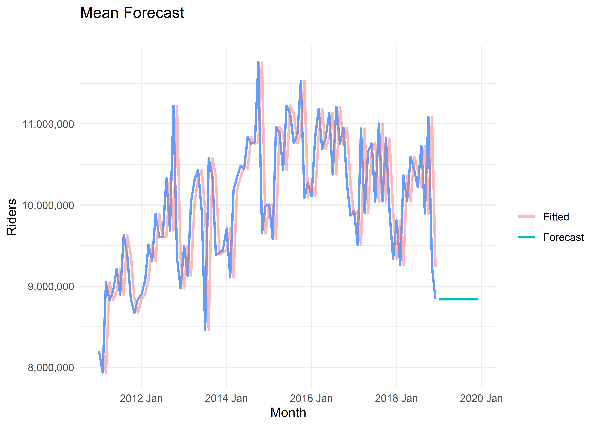
fc_mean <- df_monthly_ts %>%
model(snaive = SNAIVE(monthly_riders))
plot_bart_series("Mean Forecast") +
geom_line(
data = fc_mean %>% forecast(h = 12),
linewidth = 1,
linetype="solid",
aes(x = year_month, y = .mean, color = "Forecast")
) +
geom_line(
data = fc_mean %>% augment(),
linewidth = 1,
linetype = "solid",
alpha=.5,
aes(x = year_month, y = .fitted, color = "Fitted")
) +
labs(color = "")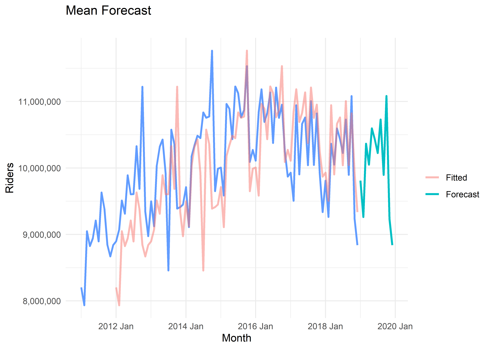
Exponential Smoothing
Exponential Smoothing is a popular forecasting method where the forecast is simply a weighted average of past observations, with weights decreasing exponentially as observations get older (Hyndman and Athanasopoulos 2021, chap. 8).
(Hyndman and Athanasopoulos 2021, chap. 9)
library(fpp3)algeria_economy <- global_economy |>
filter(Country == "Algeria")
algeria_economy | Country | Code | Year | GDP | Growth | CPI | Imports | Exports | Population |
|---|---|---|---|---|---|---|---|---|
| Algeria | DZA | 1960 | 2723648552 | NA | NA | 67.14363 | 39.04317 | 11124888 |
| Algeria | DZA | 1961 | 2434776646 | -13.6054413 | NA | 67.50377 | 46.24456 | 11404859 |
| Algeria | DZA | 1962 | 2001468868 | -19.6850418 | NA | 20.81865 | 19.79387 | 11690153 |
| Algeria | DZA | 1963 | 2703014867 | 34.3137288 | NA | 36.82552 | 24.68468 | 11985136 |
| Algeria | DZA | 1964 | 2909351793 | 5.8394130 | NA | 29.43976 | 25.08406 | 12295970 |
| Algeria | DZA | 1965 | 3136258897 | 6.2068982 | NA | 25.83308 | 22.60394 | 12626952 |
| Algeria | DZA | 1966 | 3039834559 | -4.8049709 | NA | 24.65357 | 25.98620 | 12980267 |
| Algeria | DZA | 1967 | 3370843066 | 9.4529626 | NA | 21.63177 | 23.43442 | 13354197 |
| Algeria | DZA | 1968 | 3852115817 | 10.7962386 | NA | 24.18725 | 23.13563 | 13744387 |
| Algeria | DZA | 1969 | 4257218772 | 8.4332803 | 2.569024 | 28.07076 | 23.78878 | 14144438 |
| Algeria | DZA | 1970 | 4863487493 | 8.8626571 | 2.738580 | 29.15267 | 22.07273 | 14550034 |
| Algeria | DZA | 1971 | 5077222367 | -11.3317192 | 2.810513 | 27.66378 | 18.44252 | 14960109 |
| Algeria | DZA | 1972 | 6761786387 | 27.4239695 | 2.913274 | 25.72687 | 20.44956 | 15377093 |
| Algeria | DZA | 1973 | 8715105930 | 3.8131763 | 3.093106 | 31.58976 | 25.50366 | 15804428 |
| Algeria | DZA | 1974 | 13209713643 | 7.4949177 | 3.238469 | 35.48978 | 38.74904 | 16247113 |
| Algeria | DZA | 1975 | 15557934268 | 5.0453416 | 3.505006 | 42.96560 | 33.68894 | 16709099 |
| Algeria | DZA | 1976 | 17728347375 | 8.3867565 | 3.835554 | 37.11867 | 33.05458 | 17190239 |
| Algeria | DZA | 1977 | 20971901273 | 5.2585860 | 4.295409 | 41.74032 | 30.58657 | 17690184 |
| Algeria | DZA | 1978 | 26364491313 | 9.2148357 | 5.048133 | 40.16873 | 25.53584 | 18212326 |
| Algeria | DZA | 1979 | 33243422158 | 7.4778266 | 5.621026 | 32.86575 | 31.14830 | 18760761 |
| Algeria | DZA | 1980 | 42345277342 | 0.7906070 | 6.156025 | 30.33846 | 34.33846 | 19337715 |
| Algeria | DZA | 1981 | 44348672668 | 2.9999961 | 7.058181 | 30.87774 | 34.58725 | 19943664 |
| Algeria | DZA | 1982 | 45207088716 | 6.4000041 | 7.519963 | 28.99807 | 30.92486 | 20575701 |
| Algeria | DZA | 1983 | 48801369800 | 5.4000030 | 7.968692 | 25.80231 | 27.94181 | 21228289 |
| Algeria | DZA | 1984 | 53698278906 | 5.5999965 | 8.615462 | 27.46637 | 25.71002 | 21893853 |
| Algeria | DZA | 1985 | 57937868670 | 3.6999973 | 9.518560 | 26.74219 | 23.58393 | 22565905 |
| Algeria | DZA | 1986 | 63696301893 | 0.4000010 | 10.696159 | 23.17195 | 12.85476 | 23241272 |
| Algeria | DZA | 1987 | 66742267773 | -0.6999975 | 11.492088 | 18.41211 | 14.27247 | 23917897 |
| Algeria | DZA | 1988 | 59089067187 | -1.0000055 | 12.171448 | 22.60372 | 15.50787 | 24591492 |
| Algeria | DZA | 1989 | 55631489802 | 4.4000022 | 13.303923 | 28.51406 | 18.63926 | 25257672 |
| Algeria | DZA | 1990 | 62045099643 | 0.8000006 | 15.519364 | 24.93703 | 23.44369 | 25912367 |
| Algeria | DZA | 1991 | 45715367087 | -1.2000006 | 19.536766 | 23.59976 | 29.11782 | 26554329 |
| Algeria | DZA | 1992 | 48003298223 | 1.8000023 | 25.723994 | 23.86949 | 25.31959 | 27181094 |
| Algeria | DZA | 1993 | 49946455211 | -2.1000008 | 31.007786 | 23.13894 | 21.78388 | 27786259 |
| Algeria | DZA | 1994 | 42542571306 | -0.8999965 | 40.014821 | 26.05371 | 22.53073 | 28362253 |
| Algeria | DZA | 1995 | 41764052458 | 3.7999948 | 51.931085 | 28.99623 | 26.19478 | 28904298 |
| Algeria | DZA | 1996 | 46941496780 | 4.0999985 | 61.631332 | 23.94470 | 29.76045 | 29411415 |
| Algeria | DZA | 1997 | 48177862502 | 1.0999999 | 65.164979 | 21.33760 | 30.90631 | 29886839 |
| Algeria | DZA | 1998 | 48187747529 | 5.1000036 | 68.390750 | 22.51610 | 22.57835 | 30335732 |
| Algeria | DZA | 1999 | 48640574567 | 3.2000016 | 70.200035 | 22.77900 | 28.15012 | 30765613 |
| Algeria | DZA | 2000 | 54790245601 | 3.8196785 | 70.438128 | 20.78863 | 42.06972 | 31183660 |
| Algeria | DZA | 2001 | 54744714396 | 3.0083955 | 73.414835 | 22.01686 | 36.68930 | 31592153 |
| Algeria | DZA | 2002 | 56760288974 | 5.6093232 | 74.456079 | 25.62963 | 35.50453 | 31995046 |
| Algeria | DZA | 2003 | 67863829880 | 7.2018722 | 77.634575 | 23.87594 | 38.24883 | 32403514 |
| Algeria | DZA | 2004 | 85324998814 | 4.3016243 | 80.710302 | 25.64820 | 40.05323 | 32831096 |
| Algeria | DZA | 2005 | 103198228459 | 5.9077913 | 81.826078 | 24.07340 | 47.20519 | 33288437 |
| Algeria | DZA | 2006 | 117027304747 | 1.6844883 | 83.717488 | 21.91933 | 48.81069 | 33777915 |
| Algeria | DZA | 2007 | 134977087734 | 3.3728752 | 86.797450 | 24.86996 | 47.06816 | 34300076 |
| Algeria | DZA | 2008 | 171000691878 | 2.3601349 | 91.014583 | 28.71118 | 47.97335 | 34860715 |
| Algeria | DZA | 2009 | 137211039898 | 1.6322438 | 96.236145 | 35.95268 | 35.37165 | 35465760 |
| Algeria | DZA | 2010 | 161207268655 | 3.6341454 | 100.000000 | 31.42211 | 38.44455 | 36117637 |
| Algeria | DZA | 2011 | 200019057308 | 2.8918660 | 104.524212 | 28.68532 | 38.78695 | 36819558 |
| Algeria | DZA | 2012 | 209058991952 | 3.3747687 | 113.817931 | 28.51443 | 36.89055 | 37565847 |
| Algeria | DZA | 2013 | 209755003251 | 2.7676389 | 117.521838 | 30.40093 | 33.20990 | 38338562 |
| Algeria | DZA | 2014 | 213810022462 | 3.7891212 | 120.949864 | 31.92666 | 30.21912 | 39113313 |
| Algeria | DZA | 2015 | 165979277277 | 3.7634670 | 126.736646 | 36.52335 | 23.17178 | 39871528 |
| Algeria | DZA | 2016 | 160129866570 | 3.3000000 | 134.844870 | 35.03223 | 20.86001 | 40606052 |
| Algeria | DZA | 2017 | 167555280113 | 1.6000000 | 142.384203 | 33.50147 | 22.63889 | 41318142 |
optimfunction (par, fn, gr = NULL, ..., method = c("Nelder-Mead",
"BFGS", "CG", "L-BFGS-B", "SANN", "Brent"), lower = -Inf,
upper = Inf, control = list(), hessian = FALSE)
{
fn1 <- function(par) fn(par, ...)
gr1 <- if (!is.null(gr))
function(par) gr(par, ...)
method <- match.arg(method)
if ((any(lower > -Inf) || any(upper < Inf)) && !any(method ==
c("L-BFGS-B", "Brent"))) {
warning("bounds can only be used with method L-BFGS-B (or Brent)")
method <- "L-BFGS-B"
}
npar <- length(par)
con <- list(trace = 0, fnscale = 1, parscale = rep.int(1,
npar), ndeps = rep.int(0.001, npar), maxit = 100L, abstol = -Inf,
reltol = sqrt(.Machine$double.eps), alpha = 1, beta = 0.5,
gamma = 2, REPORT = 10, warn.1d.NelderMead = TRUE, type = 1,
lmm = 5, factr = 1e+07, pgtol = 0, tmax = 10, temp = 10)
nmsC <- names(con)
if (method == "Nelder-Mead")
con$maxit <- 500
if (method == "SANN") {
con$maxit <- 10000
con$REPORT <- 100
}
con[(namc <- names(control))] <- control
if (length(noNms <- namc[!namc %in% nmsC]))
warning("unknown names in control: ", paste(noNms, collapse = ", "))
if (con$trace < 0)
warning("read the documentation for 'trace' more carefully")
else if (method == "SANN" && con$trace && as.integer(con$REPORT) ==
0)
stop("'trace != 0' needs 'REPORT >= 1'")
if (method == "L-BFGS-B" && any(!is.na(match(c("reltol",
"abstol"), namc))))
warning("method L-BFGS-B uses 'factr' (and 'pgtol') instead of 'reltol' and 'abstol'")
if (npar == 1 && method == "Nelder-Mead" && isTRUE(con$warn.1d.NelderMead))
warning("one-dimensional optimization by Nelder-Mead is unreliable:\nuse \"Brent\" or optimize() directly")
if (npar > 1 && method == "Brent")
stop("method = \"Brent\" is only available for one-dimensional optimization")
lower <- as.double(rep_len(lower, npar))
upper <- as.double(rep_len(upper, npar))
res <- if (method == "Brent") {
if (any(!is.finite(c(upper, lower))))
stop("'lower' and 'upper' must be finite values")
res <- optimize(function(par) fn(par, ...)/con$fnscale,
lower = lower, upper = upper, tol = con$reltol)
names(res)[names(res) == c("minimum", "objective")] <- c("par",
"value")
res$value <- res$value * con$fnscale
c(res, list(counts = c(`function` = NA, gradient = NA),
convergence = 0L, message = NULL))
}
else .External2(C_optim, par, fn1, gr1, method, con, lower,
upper)
if (hessian)
res$hessian <- .External2(C_optimhess, res$par, fn1,
gr1, con)
res
}
<bytecode: 0x0000025146aad168>
<environment: namespace:stats>google_2015 <- gafa_stock %>%
filter(Symbol == "GOOG", year(Date) == 2018)
google_2015 %>% autoplot(Close)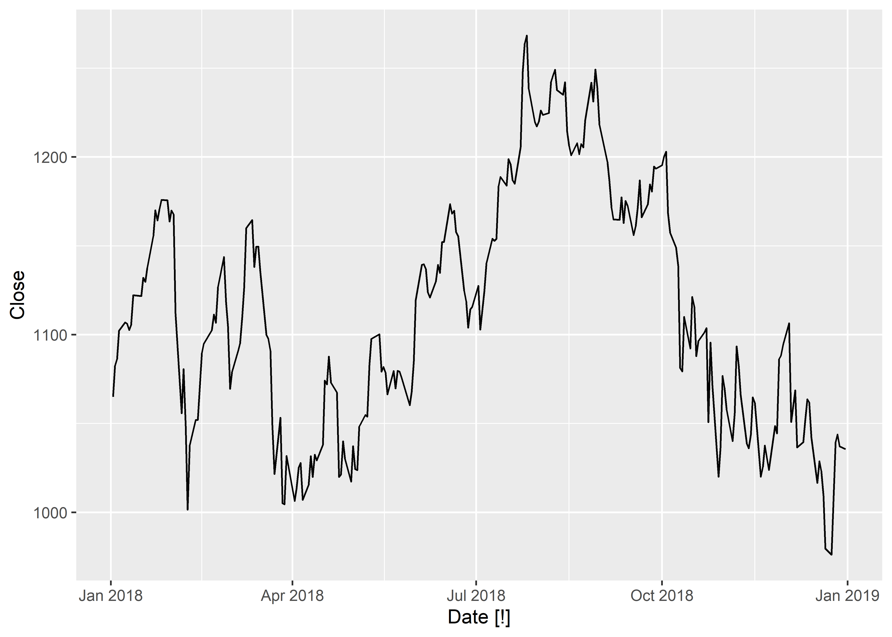
google_2015 %>% ACF(Close) %>% autoplot()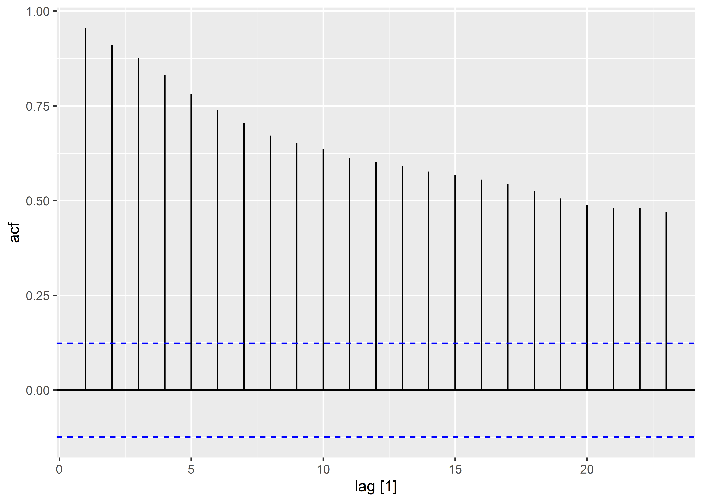
google_2015 %>% autoplot(difference(Close))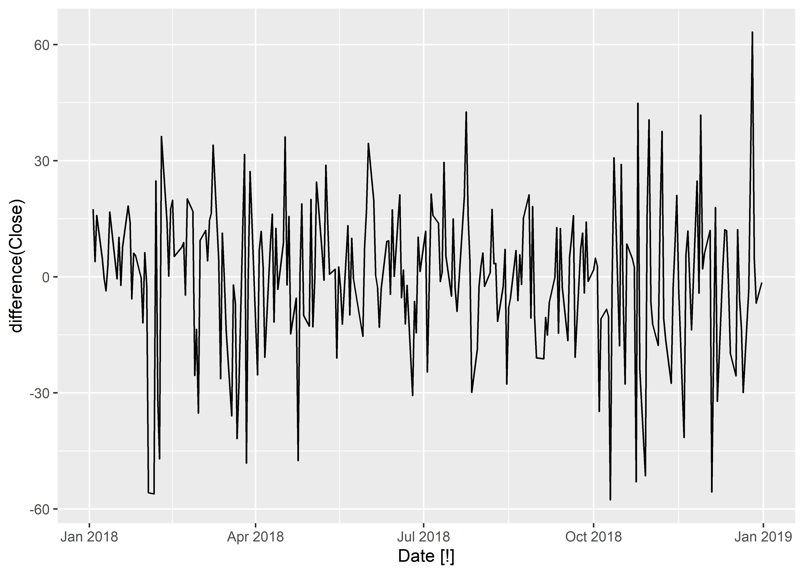
google_2015 %>% ACF(difference(Close)) %>% autoplot()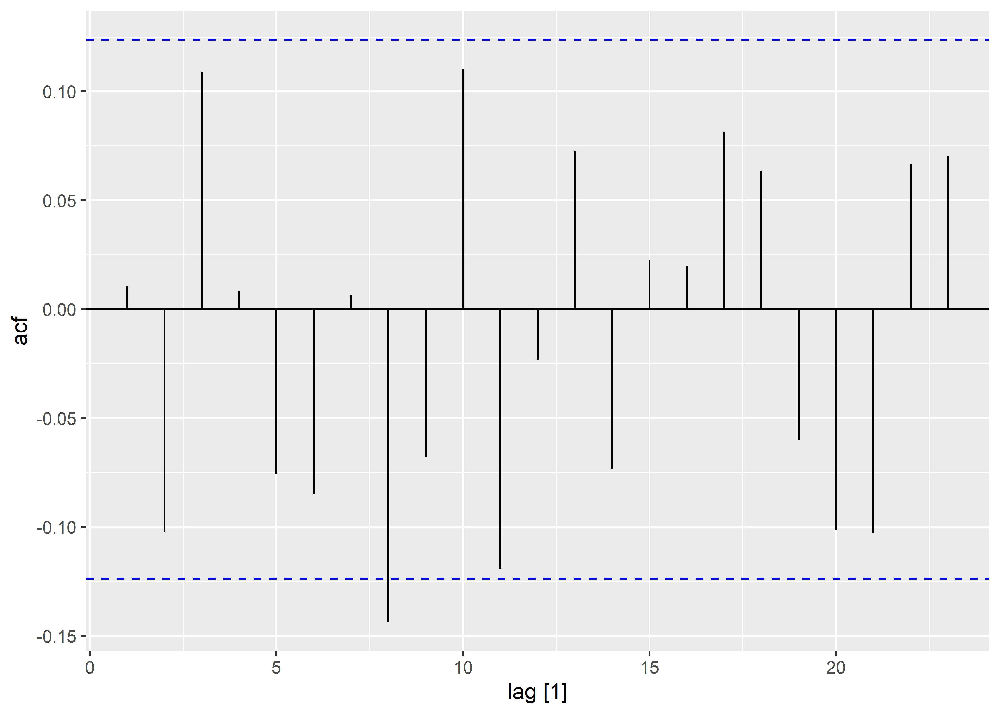
References
Hyndman, Rob J., and George Athanasopoulos. 2021. Forecasting: Principles and Practice. 3rd ed. edition. Melbourne, Australia: Otexts.